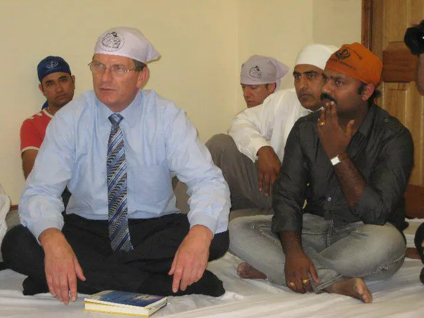
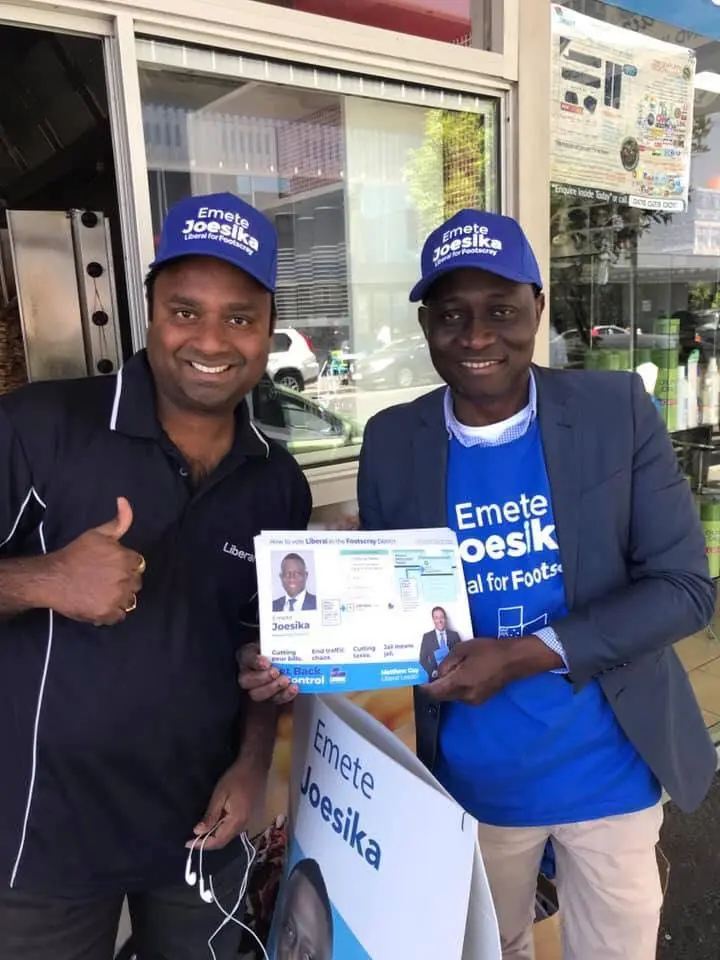
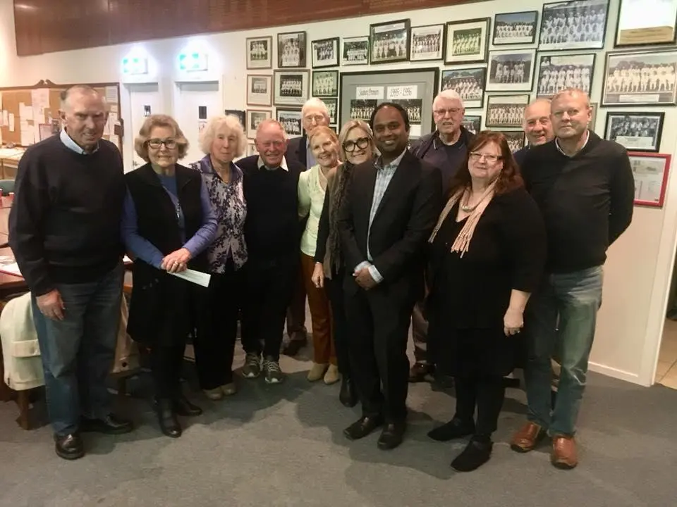
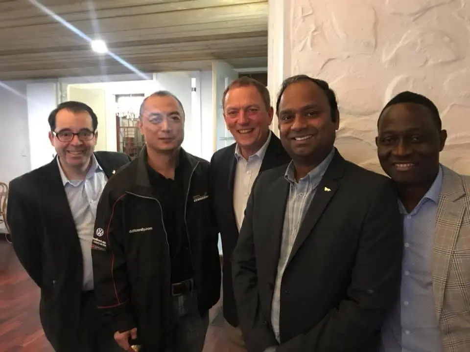
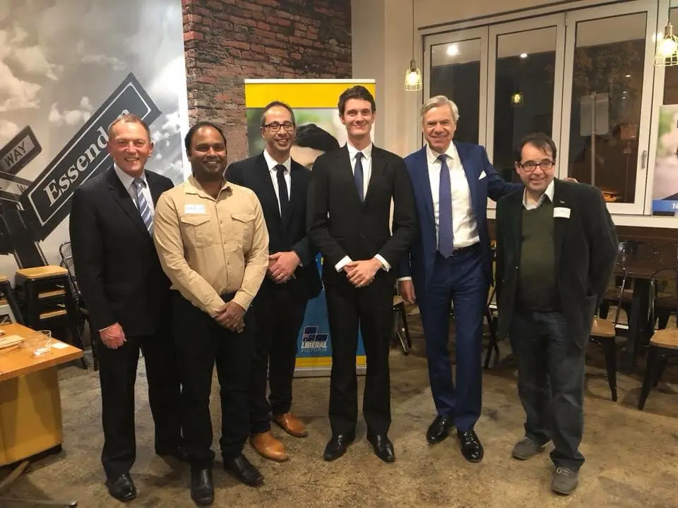
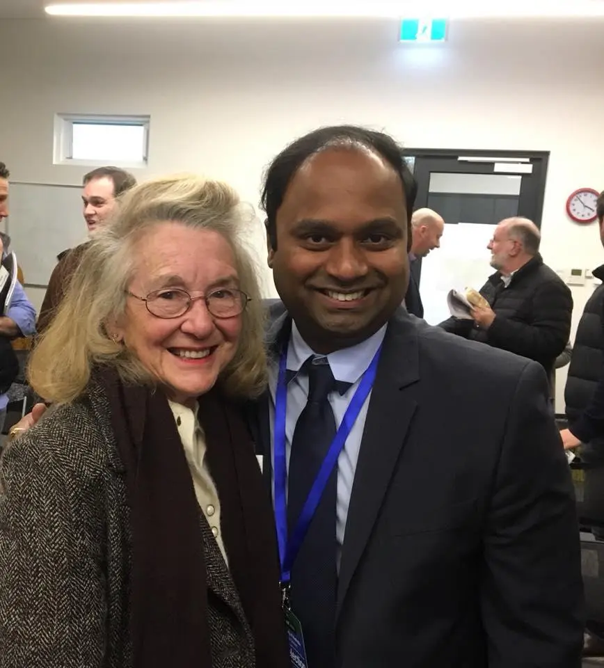
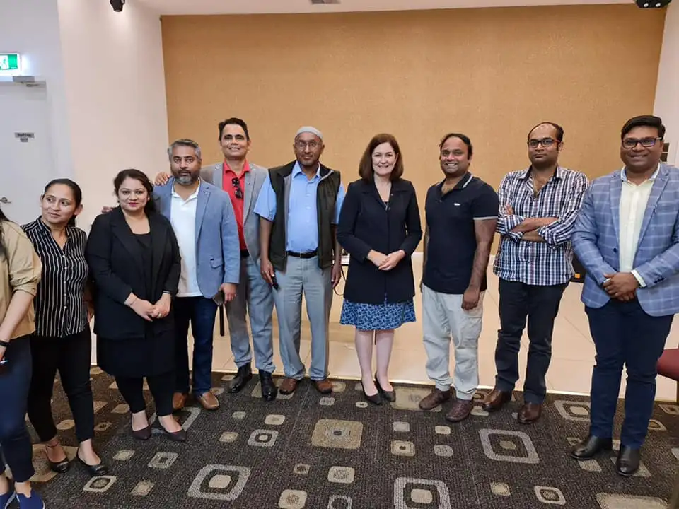
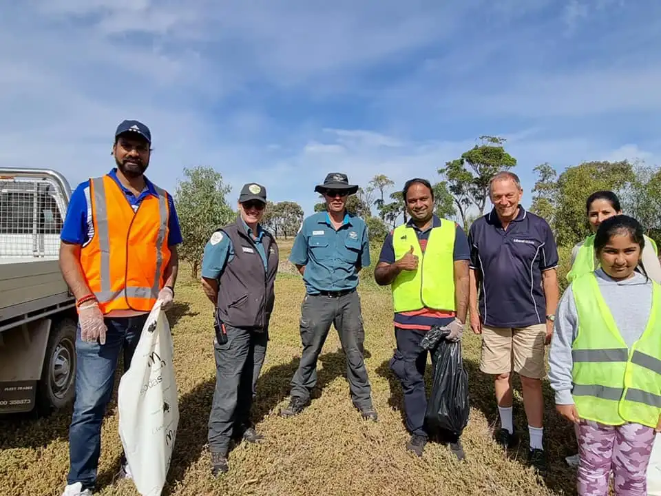

Dinesh Gourisetty
April 9, 2025 · 10 min readSource: theaustraliatoday
“He will garner a lot of support. Two Big Party leaders are now openly supporting him. Many others will follow.”

Multimillionaire entrepreneur of Indian origin Dinesh Gourisetty has put his hand up to contest for Victoria’s Liberal Party’s presidential election against the high-profile incumbent.
Who is Dinesh Gourisetty?
This story is no less than any Bollywood movie.
Two decades ago, A young international student lands in Melbourne Airport from India knowing no one in Australia.
Coming from a farmers family in the Indian state of Andhra Pradesh. Dinesh’s life grind started very early from his school time.
A one and a half-hour daily trip to and from his primary school made Dinesh understand education is the only thing that can help his family from hardships. As a good student, he received scholarships to study undergraduate level in Business Management. To meet his expenses Dinesh used to give tuitions to local students.
However, after working for two years in India, in the year 2001, Dinesh decided to go for higher studies in Australia. He came to Melbourne to do his Masters in Information Systems from Victoria University and achieve better prospects in his work life after returning to India.
Arvind Shanghais is General Manager with a multinational IT company in Sydney and had studied with Dinesh in his college days. He told The Australia Today, “There was something different with Dinesh, his ideas were always ahead of what others used to think.”
“Dinesh always used to say I want to work for the community, not any company.”
After coming to Melbourne life was as usual as it is for any international student. He worked as a kitchen hand, cleaner, and petrol station worker while at University.
The migrant-friendly residency policies at that point in time gave wings to his plans. He became Australian Permanent Resident soon after finishing his degree.
Kapil Katpelly has been Dinesh’s Flatmate and friend since both of them moved to Melbourne as international students.
He says, “We used to talk and plan about starting a lot of business while travelling on bus, train and trams in those days.”
“Dinesh asked me if I would like to be business partner with him, I just said sure.”
Dinesh and Kapil ended up launching ‘Spice -Zone’ the first South Indian grocery shop in Melbourne.
For Dinesh, Melbourne was like a place where dreams come true. Within two years, one after another, He started three restaurants ‘Indi Chillies’, ‘Alankrita’ and ‘Indi Hots’ to cater for the needs of the growing South Asian community.
Within few months he understood sourcing food items for Indian restaurants was an issue. He quickly decided to start a frozen food items company ‘Indi- touch’ that would source specific Indian food items from India and supply them to restaurants and retails.
Well, after food and work sorted one thing an Indian migrant can’t live without is Indian movies. Kapil and Dinesh used to buy CD’s of their favourite actors but missed watching “Telugu movies” on the big screen.
Kapil Katpelly told The Australia Today, “The idea of ‘KD Entertainment’ started over few beers.”
“We were really sick of watching movies on low-quality CD’s, and decided to start our own movie distribution business.”
“We ended up distributing more than 50 movies in Telugu, Tamil and Hindi languages but that business ended all the fun we had because Dinesh got married that year in 2005, and he became a family man,” laughingly says Mr Katpelly.
“I think it was 2006, One day I received a call from Dinesh who asked me to gather all our friends at our restaurant in Footscray, I even asked him what happened but he just said be there at 6 pm after work.”
I didn’t know that meeting was going to change the direction of Dinesh’s life or maybe our life added Mr Katpelly.
“Dinesh told us, see as it was PM John Howard’s policies which helped us to be citizens and be part of Australian society, I am going to support Liberal Party in the election.”
“I told him, that’s not a big deal we can donate a few thousand dollars to the Liberal party fund if you want. But he had something else in his mind, he told us I need your time not money to support the election campaign.”
Kapil said, “Dinesh used to take one or two of us and sometimes used to go alone to distribute election material as Liberal Party volunteer.”
Dinesh Gourisetty kept working as a volunteer for Liberal Party for the next six years before becoming a member in 2012-13.
By this time Dinesh became a very successful businessman of Indian origin in Melbourne with diverse interests in Restaurants, Petrol stations, Grocery Shops, Function Centers. And at present into business consulting services by the name DG business Consulting.
His Restaurants at Footscray, Docklands, Melbourne CBD were known for backdoor food tables for homeless people. Kapil Katpelly says, “Our belief is if possible, anyone hungry should not go without food from our doors.”
The businessman Dinesh was converting into a community worker. He became the youngest President of the Telugu Association of Australia (TAAI) in its 25 years of journey in the year 2014. He was also International Director of Wyndham Rotary for 2015-16.
Seeing his community work and leadership skills Liberal Party offered Dinesh Gourisetty to contest the 2014 Victoria state election from the Tarneit electorate in the western suburbs of Melbourne. Dinesh did make a strong impression on this safe Labor seat but lost the election.
Dinesh was also a candidate in the 2018 State elections for the number two spot in the western metropolitan region. The difficult second position on the Liberal ticket was a long shot to win.
In the last seven years, he has been to different party positions as Chairmen, Vice-chair, Treasurer in Liberal Party’s Lalor, Tarneit and Altona districts branches.
Currently, Dinesh is Chair of the Western Metro Regional Electorate Conference (WMREC), a powerful Liberal party body for the western region.
Now, Mr Gourisetty has thrown his hat in the ring for the election of Liberal Party President in Victoria. The vote will be held at the Liberal’s annual state council meeting next month.
One of the high-profile leaders of Victoria’s Liberal party wrote a personal message to party members requesting to support Dinesh.
He wrote, “Dinesh Gourissety rang me this afternoon to inform me he has nominated for President. I am surprised but he is a very credible candidate and easy to vote for. You may not know him but he is the most high profile party member of Indian background.”
“He will garner a lot of support. Two Big Party leaders are now openly supporting him. Many others will follow.”
Party insiders have multiple opinions about his decision few even say it is a sign of protest vote against the targeting of people of Indian origin by the party.
One of the Liberal Party members who doesn’t want to be named told The Australia Today, “I know Dinesh and seen his courage and resilience when he used to go for door-knocking in his election.”
“A lot of time people would target him by saying, go back to your country, you took our jobs and now you want to sit in parliament.”
Dogs were left on us, stones were thrown, and after threatening phone calls Dinesh had to change his mobile number, I started picking his phones just to protect him from abuse, he added.
“I think all this made him strong, perhaps stronger and focused then we can imagine.”
David Wood is a former party member in Liberal Party’s western districts. He told The Australia Today, “We all are Australians but come from different backgrounds. When it comes to Party elections, people are elected on merit and capability, and the Party has a long history of electing women, men and people of multicultural backgrounds.”
“Candidates merit, qualification and ability to do the job should be the primary markers.”
“Dinesh Gourisetty has strong competition, and I wish him well,” added Mr Wood.
It will be decided within the next few weeks whether Dinesh Gourisetty can succeed against incumbent heavyweight Robert Clark. But he will definitely give a good shakeup to the internal politics of the Victorian Liberal Party.

Dinesh Gourisetty
Political Visionary & Community Leader
Dinesh Gourisetty is a community advocate and political leader dedicated to enhancing multicultural representation in Australian politics.